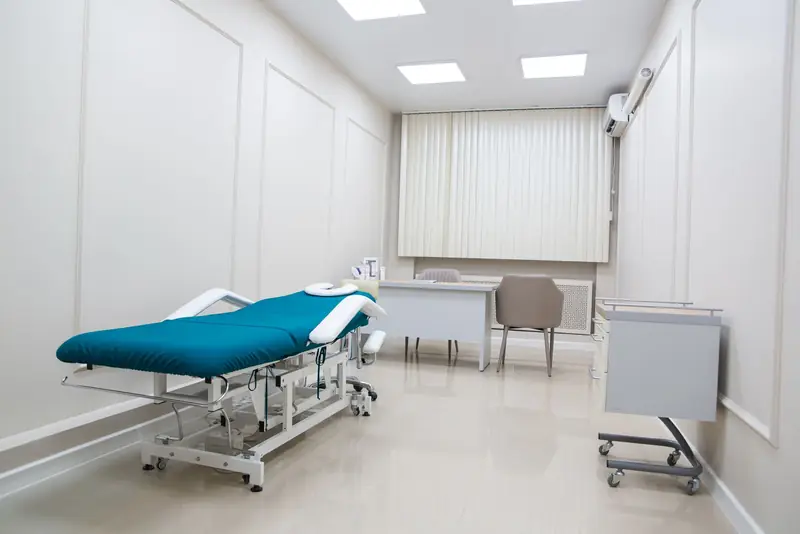

3D facial surgery simulation across 13 zones, from nose and chin to eyes and jaw

Surgery simulation in Faceliora Clinic divides the client’s scanned face into 13 zones, each with its own sliders in millimetres. A surgeon can show a nose, chin, jaw line or eye change on the client’s own face, from any angle, while explaining what is and is not possible. Every view is a simulation for communication, not a guaranteed result.
Capability details are as described by the previous website; not yet verified by product testing.
Key points
- 13 zones drawn on the scan, from the forehead to under the chin, each with its own sliders.
- Changes are held to tissue limits in each zone, and the clinician can check and move the landmarks.
- Layers keep alternative plans apart so they can be shown, hidden and compared.
Thirteen zones on the client’s own scan
When a case opens, Faceliora Clinic finds the facial landmarks on the clinic’s computer and draws the zones on the face with their names. Pressing a zone opens its sliders. The 13 zones are:
- Nose
- Chin
- Jaw
- Cheeks
- Forehead
- Temples
- Under-eye
- Lips
- Eyes
- Brows
- Sub-brow
- Nasolabial folds
- Under the chin
- Sliders in millimetres
- Both sides or one
- Layers you can show, hide and compare
- Forehead
- Brows
- Sub-brow (the skin under the brow)
- Temples
- Eyes
- Under-eye
- Nose
- Cheekbones and cheeks
- Nasolabial folds and marionette lines
- Lips
- Chin
- Jaw and jaw line
- Under the chin and neck
Sliders in millimetres
Each zone has sliders named the way clinics talk about the change. The nose has bridge height and width, projection, an upturned or rounded tip, tip width, alar width, nasal angle and a control for a deviated nose; the chin has projection, length, width and shape; the eyes have the width and height of the eye opening, the outer corner, and a double-eyelid crease with its shape. Paired areas can be changed on both sides together or on one side.
For the nose, angles and ratios such as the nasolabial and nasofrontal angles are shown before and after under the sliders, so a profile change can be discussed in the terms surgeons use.
Held to tissue limits
Each zone has a ceiling for how far its tissue may move, and the bony corners of the face, such as the cheekbone and the jaw angle, stop an edit made in another zone from spreading where it should not. When several zones are changed at once, the skin where they meet is never pushed further than any one of them asks. These limits keep the picture plausible; they do not say that a procedure is safe for the client.
Landmarks the clinician can check
Landmarks are found by two models, MediaPipe and Deep-MVLM, together with the geometry of the scan. In zone adjust the clinician can drag any landmark or zone outline to where it belongs on this face; the zones follow, and the correction is saved with the case.
Layers and comparison
Simulations are kept in named layers. A clinic can build “nose only” and “nose with chin” as two layers, show either, hide one, and compare them with the original scan side by side or in a single view. Layers are saved with the case, and every step can be undone.
What the simulation does not show
A scan sees the surface of the skin. It cannot show bone, cartilage, scars, swelling or healing, and the simulated shape is not a surgical plan or a size for an implant. Suitability, technique and risks are discussed with the surgeon after an examination.
Every view in Faceliora Clinic is a simulation for communication, not a guaranteed result, and does not replace a physician’s examination and advice.
Simulation is not diagnosis, prediction or a guarantee of treatment outcomes.